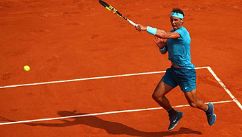
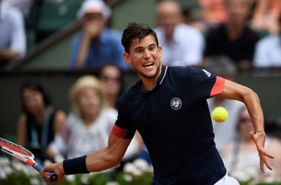
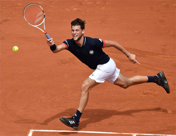
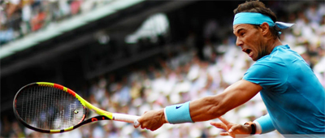
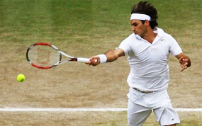

Previous: First Strike Tennis - All Levels | 🏠 Strategy Home | Next: How Djokovic Dominates Nadal
Forced Errors
Comprehensive unified tennis knowledge base — Fundamentals, Stroke Analysis, Reference Library, and more
Forced Errors
Craig O'Shannessy

Did Rafa win the French with defense—or offense?
Tennis is a game of winners—but much more, tennis is a game of errors. The tour match statistics record only winners and unforced errors. But often they only confuse the understanding of outcomes.
In the 2018 French Final, won in straight sets by Rafael Nadal, his opponent, Dominic Thiem hit 41 winners counting aces. Nadal had only 26.
Thiem made 47 unforced errors including double faults. Nadal had 24 unforced errors. That would lead you to conclude that Rafa's defense rather than offense was the key to the match.
But adding up winners and errors accounted for about three fourths of the total points played. What about the other 45 points? Although unrecorded officially, these points were not unforced errors or winner-- they were forced errors.
In the final Nadal may have hit only 26 winners. But he also created 32 forced errors. In other words, his ability to force Thiem into mistakes was a more significant factor than his outright winners.

What do we make of Thiem's 41 winners in a straight set loss?
These additional points won by Forced Errors more than balanced Thiem's outright winners. Thiem for his part created only 14 forced errors—less than half of Rafa's.
How do you define a forced error? According to Leo Levin, director of Sports Analytics for SMT which collects data at all 4 Grand Slams, "What we are trying to do is place the blame. Anytime there is a forced error the preceding shot has to be an aggressive forcing shot."
Here is an example. In the first game against Nadal in the fourth round, French player Maximillian Marterer lost an 8 shot rally when he missed a forehand. It was scored as an unforced error. But Marterer had run from one sideline to the other, was hitting on the run, and was pressured by distance, time, as well as the spin and power of a Nadal inside forehand.
So was that really an unforced error? More likely, this was a classic forced error. According to Levin, "The typical things we look for are pace of the previous shot, placement, both depth and angle, how far did the player have to run to get there, and also what direction was he going."
Levin developed the concept charting matches for his college teammates at Foothill College in Los Altos California, and then, working with a company that was starting to do statistical match analysis.
"We came up with a concept saying that every point ended in one of three ways. A winner, a forced error, or an unforced error. And every single stroke, every single result, fit into one of those categories."
"A forced error is much closer to a winner than it is to an unforced error. An unforced error is a situation where you are completely in control and you make the mistake."

What kind of pressure creates Forced Errors?
This led to the development of a concept he called the "Aggressive Ratio," sometimes also called the Aggressive Margin. The idea was to give players credit for forcing errors, rather than counting these shots against the player who made the error.
See how that changes the stats when we think about the French final. Nadal's total of winners and forced errors was actually 59. Theim's winner and forced errors totaled 55.
Looked at this way, the stats, rather than implying that Thiem was the more aggressive player, show that it was actually Nadal. Add on Thiem's 47 unforced errors and you see why the match was a rout. And maybe with the forced error category as an option, Nadal's aggressive ratio would have been even higher.

The Aggressive Margin told the real story of the French.
Levin has used his concept to look at a large number of tour matches. His conclusion is that aggressive play accounts for 67% of all points on the men's tour and 57% on the women's.
True, the Forced Error is a judgment call with a healthy gray area. But forced errors are what players should most obsess about. They are the key to winning and losing matches—and for coaches and fans—understanding how.
Several years ago, John Yandell wrote a series of articles on the Forced Error and how it fits into the overall stats picture. He started by charting a U.S. Open Final between Sampras and Agassi.
Subsequent to that he charted the 2006 French Open final between Nadal and Federer (Click Here), their Wimbledon final the same year (Click Here), and the Wimbledon final 2 years later, among other matches. (Click Here.) In every case the Aggressive Margin--adding together a player's winners and forced errors and subtracting the unforced errors—told the story of the match.

The Forced Error also told the story in several Federer/Nadal matches.
John also did an article about charting the matches of a nationally ranked junior he was working with at the time, putting Winners, Forced Errors, and Unforced Errors in context to explain the outcome of several matches. (Click Here.)
Although charting this way can be done by computer or phone, all you really need is a pen and a piece of paper. Below is a simple form that allows you to do it. Try it yourself watching a pro match, or watching the match of a friend, a junior player, someone you coach, or your own child if they are competing.
You can break down the margin down by stroke as well. See if the Forced Error isn't as revealing to you as in the French final between Nadal and Thiem.
Click here to download the Forced Error chart as a Word Document.
Player:
Winners
Forced Errors
Unforced Errors
Aggressive Margin
Serve
Forehand
Backhand
FH Volley
BH Volley
Overhead
TOTALS:

Craig O'Shannessy is widely recognized as the world leader in analyzing tennis statistics, tennis strategy, and applying his insights in coaching. His research has uncovered the real magic numbers in winning tennis across all levels of the game. He writes for the ATP Tour website and the New York Times among others elite publications.
He has coached on the tour for 20 years working with players including Kevin Anderson, Amer Delic, and Rajeev Ram. His website Brain Game Tennis offers detailed analysis and training programs based on his research that have helped thousands of players around the world.

Click Here to visit Craig's site and check out his amazing training products!
Source: tennisplayer.net archive — Forced Errors .docx (John Yandell teaching library, 2002-2022). Extracted and rendered as HTML for Tennis Future Lab.